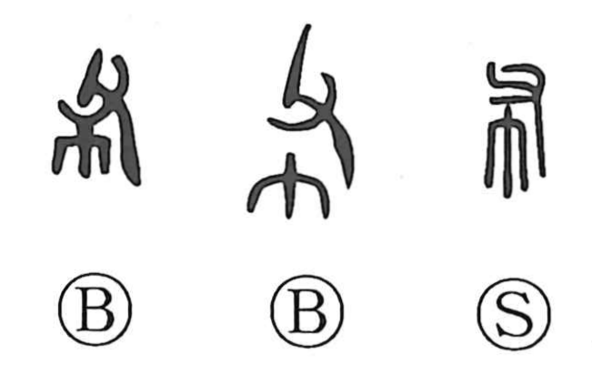

布

Kun: nuno, shiku | On: fu, ho
cloth ・ to spread ・ to extend ・ to distribute
Explanation
布 is a pictophonetic character formed with 父 above 巾: 父 supplies the sound value fu, while 巾, the cloth radical, signals its sense. The Shuowen defines it as cloth woven from hemp—hemp being the principal textile material in antiquity, before cotton arrived later from the south. The character figures in cultural contexts such as 布銭, bronze “spade money” shaped after farm tools, and in the Book of Odes (Wei Feng, Meng): “carrying cloth to exchange for silk,” evoking itinerant traders dealing in cloth and thread. From its concrete sense it also came to function like 敷, meaning to spread out, widen, array, or link together.